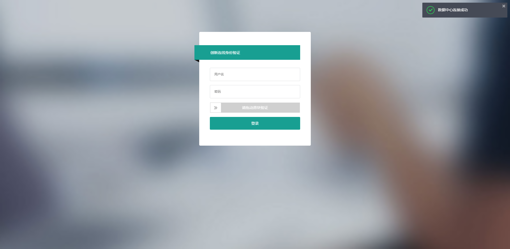
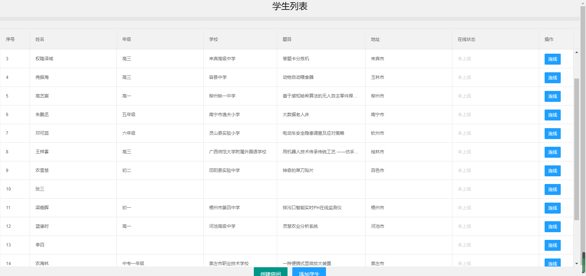
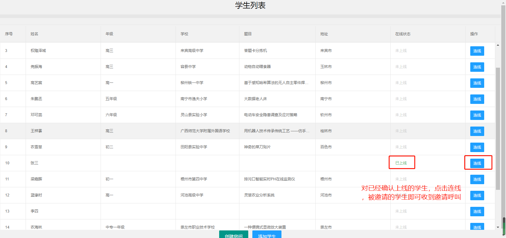
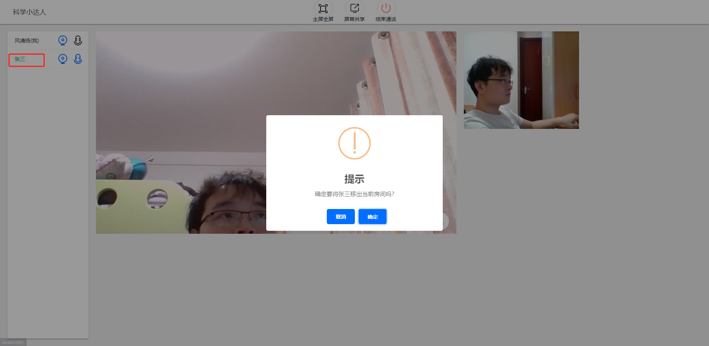
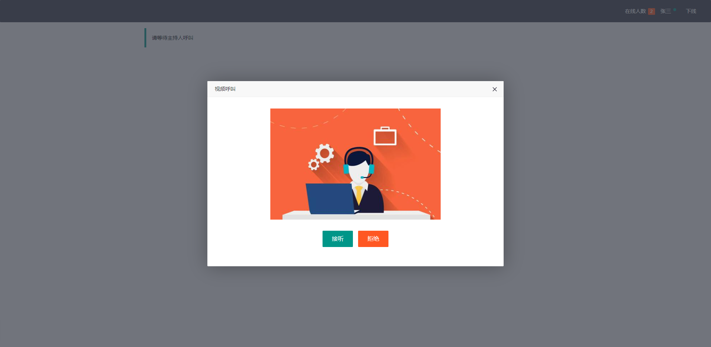
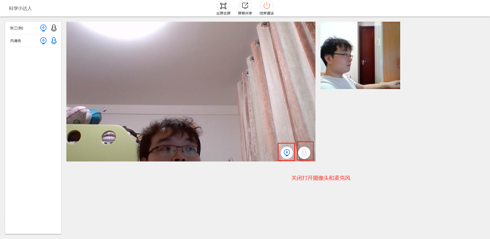
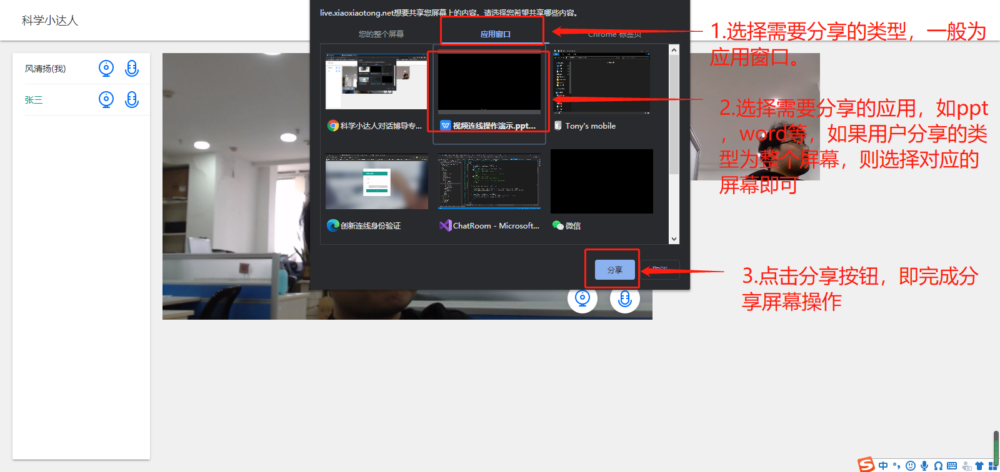

上周，开发了一款基于腾讯音视频服务（TRTC）的视频会议类的web应用。在聊具体实现之前，我想先聊聊背景，吐槽吐槽，虽然吐槽并不能解决任何实际问题，但既然是个人的博客空间，就允许我任性的撒个娇吧。
因为时间仓促，这个项目给到我们的实际开发时间只有5天，而这5天里，我们经历了以下事件：
1.没有具体的规划，没有原型设计，没有界面设计，团队内部的沟通问题，导致了我们在接手项目的时候几乎是一张白纸，一切都得靠我们自己完成，而上面传达下来的指令只有一条，“务必完成”；
2.本来定了7天的开发，后续又受到要提前测试的通知，时间被缩短到了5天；
3.到第5天的时候，早上5点左右，又临时通知新增一场会议，而需求和之前我们设计的需求并不相同。注意，新增的这场会议，在之前，作为开发人员，毫不夸张，我是一无所知的，却被要求在上午9点完成新的流程修改和准备好测试环境。我想问，新增的需求我不需要了解吗，早上5点提需求，为了赶进度这几天每天2点才睡觉，你意思是让我5点就立刻起来整理？就算我整理出来了，程序不需要调整吗？调整后不需要测试吗？这些都是分分钟都能做的事儿吗？
4.因为被邀嘉宾的建议，在正式开始直播的当天，系统有被强制要求改版，而调整的时间可以精确到分钟，具体来说，只有40分钟左右，因为两场直播，同一天开始，虽然后一场是测试彩排，但在这期间，上一场可是正式直播，且为不间断直播；总而言之就是，在重合的时间里，既要保证第一场直播不能间断，又要保证第二场直播彩排满足改版要求。
从一个正常人的角度，以上任何一点，应该都属于是不合理的要求，如果不是亲身经历，我甚至会认为这是在故意刁难！
好了， 吐槽就戛然而止吧，特朗普也说了，或许这就是人生吧~
————————————————娇气的分割线——————————————————
先来说一下我们这个系统的大概需求，
1.要有基本的人员信息认证；
2.可以实时监控在线的用户人数，并向指定的用户发送呼叫，用户接听后进入指定的会议房间；
3.满足多人同时进入会议，可以自主控制麦克风和摄像头的开关，分享屏幕等基本功能；
4.会议全程为在线直播
基本就是这些，对应的，基础的功能模块有
1.登录认证
2.实时通信
3.视频会议
4.在线直播
在对应的，我们采用的解决方案入下
web框架：layui
通信框架：signalr
视频会议：trtc sdk for web
在线直播：lss
通过模块化的工作模式，来缩短我们的工作周期。再来说下具体实现
1.登录认证
这个我就不多说了，这块因为模型很简单，唯一相对耗时的部分就是在用户数据导入的部分，但也比较简单，忽略不计了吧。
2.通信框架
关于SignalR，我在之前有单独写过一篇博客介绍过（传送门：https://tony_df.gitee.io/hexo/2019/11/07/winform%E6%A1%8C%E9%9D%A2%E7%A8%8B%E5%BA%8F%E5%88%A9%E7%94%A8SignalR%E5%AE%9E%E7%8E%B0%E8%87%AA%E5%8A%A8%E5%8C%96%E9%9B%86%E4%B8%AD%E5%8D%87%E7%BA%A7/），这里用到的和那篇里写的东西差不多，只是因为有了具体的业务，在代码量和功能点上相对多一些
这里我就简单介绍下我遇到的坑吧
第一个是跨域，因为是在.net core上集成SignalR，在Startup里要注入相关服务，具体代码如下；
首先是ConfigureServices里添加如下代码
1 | //配置跨域 |
其次在Configure里添加
1 | //开发环境用all，生产环境建议用any |
至此系统上的跨域配置就完成了，需要注意的是，如果你的公司环境采用了反向代理技术，需要在反向代理的配置里增加websocket的消息转发，因为signalr框架帮我们在客户端和服务端自动选择通信协议，依次是，websocket->sse->http长连接，如果我们反向代理没有做转发，signalr会在降级到sse是提示握手失败的错误。因为它检测到服务器已经是支持sse了，但因为代理转发的问题，会一直报错，且signalr也不会在继续降级，所以需要配置反向代理的转发设置；
以下为nginx的配置方式
1 | # 转发websocket需要的设置 |
将其添加到server_name配置项下面即可；
关于signalr，我在之前的博客里也推荐过比较好的介绍类文章，这里就不在赘述了；
然后，我想多提一句关于认知的问题，因为我在开发到这里的时候，为了效率，希望能使用上websocket协议。这需要服务器支持，而iis8.0以下的版本是不支持websocket协议的，也就是我需要部署的项目版本只能是Linux内核的服务器或者Windows Server 2012及以上版本的服务器。当我提出相应申请的时候，我们小组的领导非常支持也积极帮我协调资源。
但令人惊讶的是，负责资源调配的另一位领导，在询问具体情况时，非常肯定甚至非常自以为是的跟我们说，“websocket不就是http协议吗？支持http就肯定支持websocket！还申请什么服务器，用现在2008版本的就行，你说不行那是你的问题，跟服务器没关系”，当我试图解释的时候，该领导也非常不屑的戴上了某不知名品牌的耳机，一副高高挂起的样子，呵~
对于他的问题，我想说，自行车和汽车都是基于公路的，你能说他们俩是一样的东西吗？
世界上有个东西，叫Google，如果你不知道，或者你访问不到，中国还有个东西，叫百度！自己要是有不确定或者困惑的问题，建议先上这两个地方查查，虽然这上面胡说的人也挺多，但在信息技术方面的问题，他们给出的结果还是非常值得参考的。
3.视频会议
这块呢，虽然是核心功能，但我觉得也并没有什么可说的，因为腾讯给出的api都很完善了，另外他们关于在各个平台的集成，都给出了sdk和完整的demo，我们无非就是结合具体的业务，抄抄腾讯的作业罢了。
因为是公司项目，具体的业务代码我就不列了，也说几个具体需要注意的点吧，
a).获取usersig
usersig是根据腾讯提供的算法，在服务端生成，需要appid和appkey作为加密参数，在服务端获取的时候，建议加密传输过程，.net的话，可以采用mvc框架提供的ValidateAntiForgeryToken方式，api的话，可以用jwt来做鉴权；
b).配置ssl证书
如果在本地测试的话，sdk支持localhost，但是如果在生产环境测试，需要提前配置ssl证书，http协议是不能正确访问腾讯服务器的。
c).分辨率设定
web版的话，视频信号的分辨率是自适应的，为了节省流量费用，建议设定好视频的清晰度
1 | //初始化流 |
d).踢人操作
当前的踢人操作，腾讯给出的方案是服务端的接口，而目前我们由于使用了signalr，所以我们的踢人操作并没有使用腾讯提供的方案，而是基于即时通信来完成踢人。
大概的流程就是，在直播间内有一个权限高的人，他有踢人的权限，这个判定是在第一步身份验证的时候就做好了，而他可以获取直播间内所有人的id，可以定向的向他发送移除的消息，而接收人在接受到该消息后，会在收到弹窗提醒后退出当前房间。从而完成了踢人的操作，而不需要借助腾讯的服务端api。
，看下代码
1 | /// <summary> |
1 | function removeUser(user_id,username) { |
e).软件环境
因为trtc也是基于webRTC协议的，所以浏览器内核需要支持WebRTC协议，所以，建议在用户使用系统的时候，检测客户端环境，如果环境不符，引导用户去下载chrome浏览器。
4.直播推流
这一块，我就不多说了，因为我的同事在直播这块非常有经验，说是一个人撑起了整个公司的直播体系也不为过。经验这个东西，是学不来的，一定要经历过，才能达到这个级别，因为直播就代表现场可能会有N种情况的突发状况，如果你没有经验，生瓜蛋子一个，即便有理论有技术，就是没经验，运气好直播没突发状况还行，运气不好，就可能毁了一场直播，而有经验的话，即便是遇到突发状况，你的经验也会帮你把损失降到最低，这就是根本的区别。
另外在简单介绍下我们用到的服务吧。当前国内三朵云和其他云基本都有直播类的服务，我们用的是百度的lss，官方的文档传送门：https://cloud.baidu.com/doc/LSS/index.html?from=productToDoc。可能有人会问，你们用腾讯的视频服务，为什么直播还用百度的，不直接都用腾讯的？因为音视频的服务是第一次用，而直播是第N次用，我也说了，我们的同事非常有经验，尽管腾讯也支持，但实际情况才是最有参考价值的，所以，这个就不多说了。
好了，今天的分享差不多就这些，因为是公司的项目，不能把仓库地址分享出来，但前面我提到的另外一篇博客有关于通信部分的完整代码。另外多说一句，腾讯的音视频服务还是挺好用的，我们实际测试的时候一次引入10路信号也可以很稳定，但是引入的信号数量和对网络环境的要求是成正比的，信号量越多，对网络环境要求越高。所以正式使用的时候需要注意一下，这些内容，sdk的介绍文档里倒是都有，就是看你看的仔不仔细了，而且流量计费的时候，挺坑的，大家用的时候，注意监控！简单分享几张成品图吧






